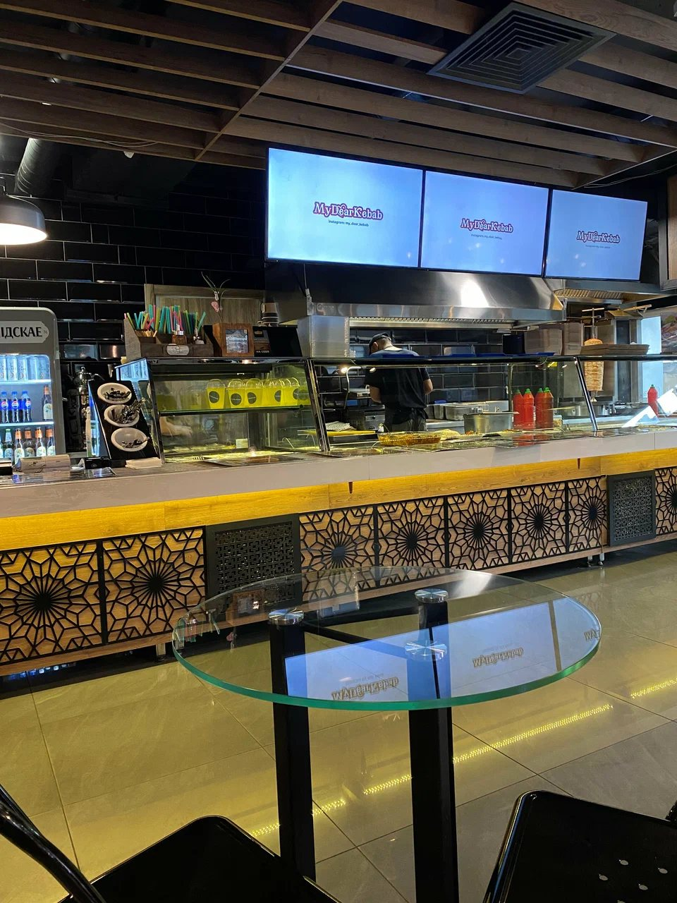
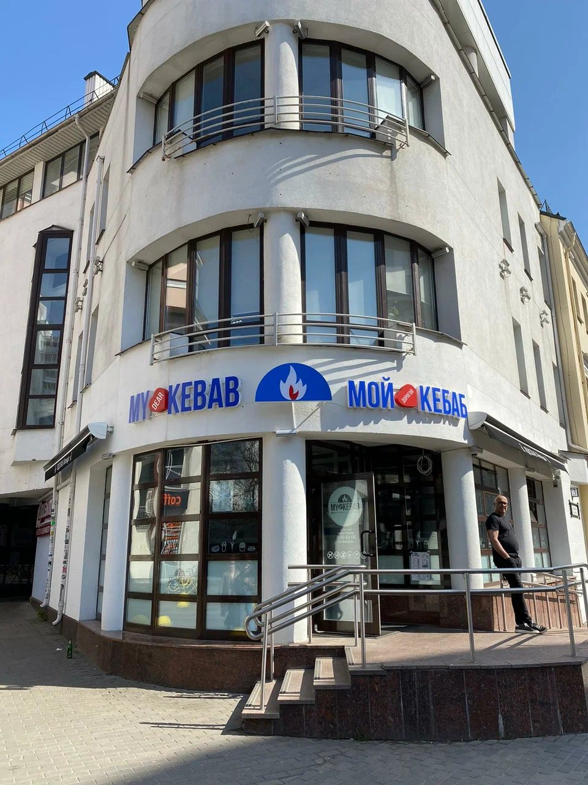

Атмосфера

ЗалНад стойкой висят экраны с меню, а за столиками можно остаться поесть. 
ВерандаСтолики под зонтами и растения у ограждения. СтойкаЗдесь можно выбрать блюда, взять напитки и кофе с собой. 
Открытая кухняБлюда собирают прямо у стойки. 
ДонерТонкий лаваш и мясо с овощами. ВходСиняя вывеска с сердцем и пламенем над дверью.
Заходите в гости
Тёплый свет, открытая кухня и веранда. Вот как у нас выглядит.


Проголодались?
Позвоните, закажите доставку или заходите к нам. Доставляет собственная курьерская служба.
Позвонить Смотреть меню